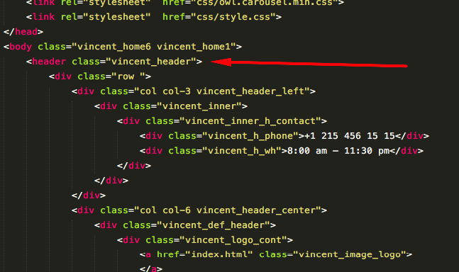
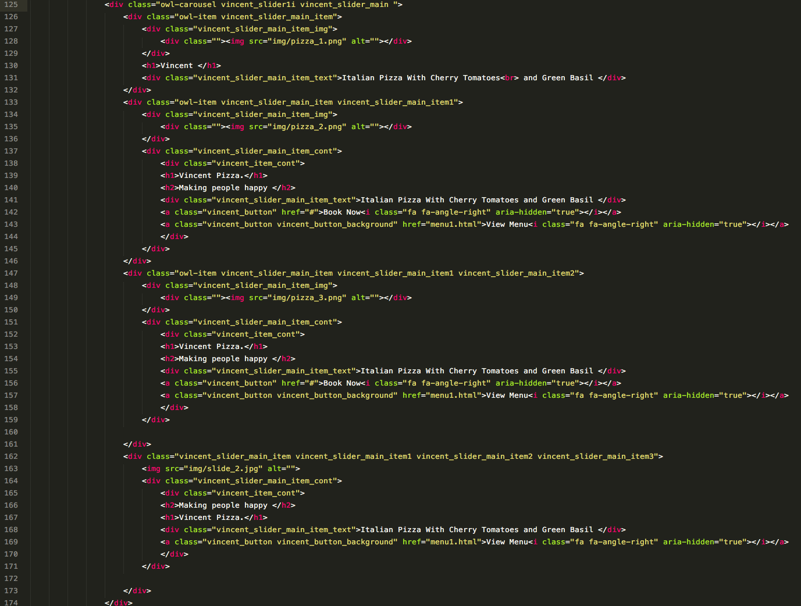
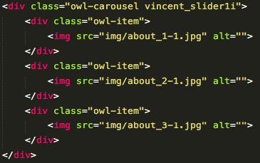

Vincent HTML
Pizzeria, Cafe, Restaurant Website Template
- by: Pixel-Mafia
- Pixel-Mafia Support
File Structure
The list of available pages:
- 404.html
- about1.html
- about2.html
- audio-post.html
- blog-fullscreen.html
- blog-grid.html
- blog-standard.html
- category.html
- chat-post.html
- contact-multiple-maps.html
- contact-w-gallery.html
- home2.html
- home3.html
- home4.html
- home5.html
- home6.html
- image-post.html
- index.html
- link-post.html
- menu1.html
- menu2.html
- menu3.html
- product-listing.html
- product.html
- qoute-post.html
- single-product.html
- standard-post.html
- team.html
- typography.html
- video-post.html
The template contains three main folders:
- css - all CSS files.
- img - all images.
- js - all JavaScript files.
HTML/CSS Structure
This template is a responsive layout with sidebar. The general template structure is the same throughout the template. If you would like to edit the color, font, or style of any elements in one of these columns, you would do the following:
- Open css/style.css
- Find needed css-block.
- Change Value.
For easy navigation of the CSS file we placed Master Stylesheet in the beginning:
[Master Stylesheet]
Project: Vincent
Version: 1.0
[Table of contents]
1. General
2. Header
3. Typography
4. Contact with Sidebar
5. Contact with Gallery
6. Contact Multiple Maps
7. About1
8. About2
9. Team
10. Menu1
11. Menu2
12. Menu3
13. Home 6
14. Home 1
15. Home 2
16. Home 3
17. Home 4
18. Home 5
19. Fullscreen Gallery
19. 404
19. Blog Grid
19. Blog Fullscreen
19. Blog Standard
20. Standard Post
21. Product listing
22. Single Product
23. Product
24. Responsive
If you would like to edit a specific section of the site, simply find the appropriate label in the CSS file, and
then scroll down until you find the appropriate style that needs to be edited.
Edit Header
Editing the header is possible if you find a block with a vincent_header class.

This way you will have access to edit the logo and menu. To change the logo, upload the desired image to the img folder (logo.png and logo_footer.png) and change size it to your own (style.css, wherever you find a mention logo.png).
Edit Main Slider
To edit the main slider, you need to open the index.html file and edit this block, replacing the images and text with the ones you need:

Edit Carousel
To edit the carousel it is enough to find a block with the owl-carousel class and change its contents:

JavaScript
This template next Javascript files:
- imagesloaded.pkgd.min.js
- index.js
- isotope.pkgd.min.js
- jquery-3.2.1.min.js
- jquery.countdown.min.js
- jquery.data-parallax.min.js
- jquery.isotope.min.js
- jquery.spincrement.min.js
- jquery.swipebox.js
- jquery.viewportchecker.min.js
- kube.js
- maps.js
- maps1.js
- maps2.js
- owl.carousel.min.js
- stripes.js
- jQuery is a Javascript library that greatly reduces the amount of code that you must write.
- Most of the animation in this site is carried out from the customs scripts.
- In addition to the custom scripts, we implement a few plugins to create the effects or get more functionality. This plugins is packed, so you won't need to manually edit anything in the file.
How To Rate This Item
If you are satisfied, please rate us here with 5 stars: https://themeforest.net/downloads
Thank you!

Sources and Credits
- jQuery - http://jquery.org
- Isotope - http://isotope.metafizzy.co
- jQuery Countdown - http://github.com/kemar/jquery.countdown
- jScrollPane - http://jscrollpane.kelvinluck.com/
- reflection.js for jQuery - http://www.digitalia.be
- Font-Awesome - http://fortawesome.github.io/Font-Awesome/
Thank You!
We are very grateful that you have chosen our product. We always want to make our customers happy and we will do everything to achieve this goal.